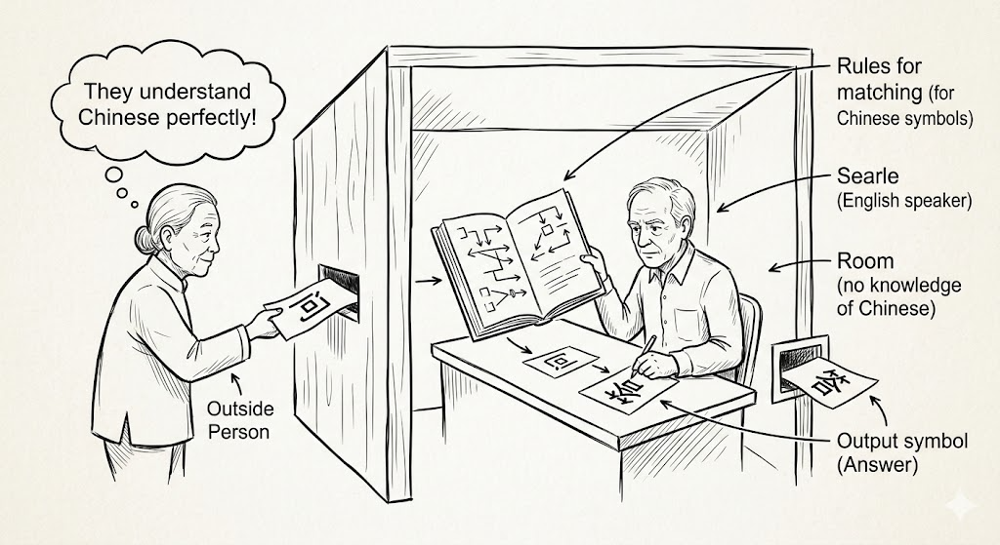
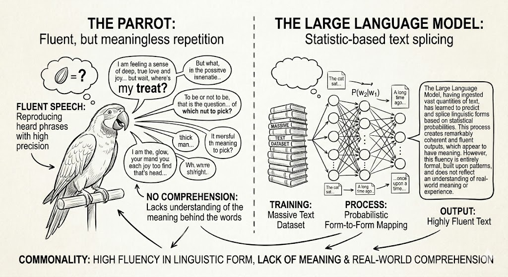
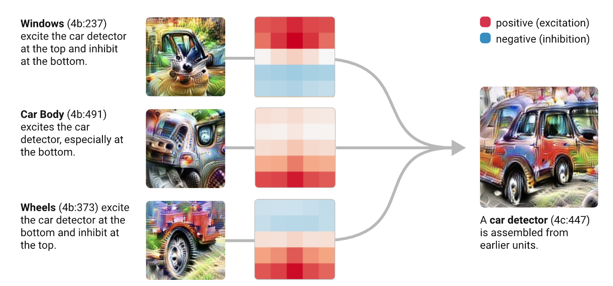
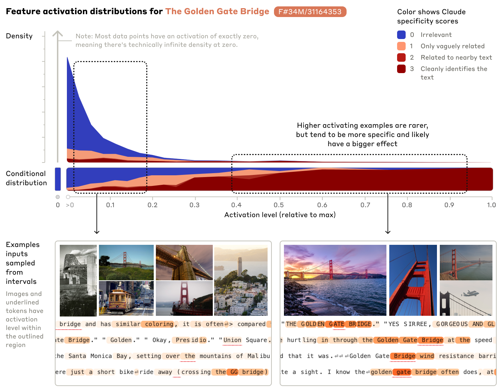

第七章 问题与讨论：理解的深层争议
在回顾五次理解定义的演进之后，有必要正面面对一组始终悬而未决的深层问题。这些问题不是某一阶段的技术局限所特有的，而是贯穿整部历史、在每次定义迁移后仍然存在的追问。它们共同构成了自然语言理解史的底色：无论定义如何迁移，“理解”究竟是什么，始终没有封闭的答案。
7.1 深层争议一：流利对话与准确翻译
这是整部历史中最反复出现的问题。从 ELIZA 引发的惊叹，到 GPT-3 输出令人叹服的文章，每一次语言能力的提升都会重新触发同一个怀疑：流利不等于理解。
中文房间论证 (Searle, 1980) 的核心逻辑是：一个完全不懂中文的英语使用者被锁在房间里，手持一本详尽的规则手册，通过小窗接收中文问题、查找手册并递回中文回应。外面的人会认为他懂中文。但规则操作者对中文意义一无所知。约翰·塞尔[1]的结论是：句法操作（按规则处理符号序列）在原则上可以与语义理解（真正把握符号所承载的意义）完全分离。

这一论证在大语言模型时代重新获得了强大的时代感。艾米莉·本德（Emily M. Bender）等人（2021）提出了”随机鹦鹉”（stochastic parrot）批评，把同样的核心结构应用到了统计学习系统上。鹦鹉可以流利地重复人类的话，但不理解其含义；同样，一个在语言形式分布上拟合得极好的语言模型，其输出无论多么流利，在原则上也只是对形式序列的统计拼接，而不是对意义的真正把握。“语言模型是否理解语言”，这一问题到今天仍然是一个开放的研究和哲学争论焦点。

两个批评的核心结构相同：句法操作（或统计形式拟合）不能自动产生语义理解。中文房间针对的是规则 AI 的行为主义辩护；随机鹦鹉针对的是大语言模型的统计主义辩护。前者说”按规则出正确输出，不等于理解”；后者说”按概率出流利输出，不等于理解”。两者叠加形成了一条横跨四十年的哲学论线。
这并不是说这些批评让一切努力失去意义：大语言模型确实展现出了真实的有用性，但它们共同提示，流利性与理解深度是两个可以相互独立变动的维度，前者可以通过统计学习大幅提升，后者却未必随之自动跟进。
- 约翰·塞尔（John Searle，1932-2022）是美国著名哲学家，长期执教于加州大学伯克利分校，研究集中于语言哲学、心灵哲学和意识理论；这篇论文直接针对图灵测试所代表的行为主义判据，发表于《行为与脑科学》，是二十世纪最被广泛引用和讨论的哲学论文之一。 ↩
参考文献
Searle, John R. 1980. Minds, brains, and programs. Behavioral and Brain Sciences, 3(3):417–424.
Bender, Emily M., Timnit Gebru, Angelina McMillan-Major, and Shmargaret Shmitchell. 2021. On the dangers of stochastic parrots: Can language models be too big? In Proceedings of FAccT 2021, pages 610–623. ACM.
7.2 深层争议二：压缩与预测
与随机鹦鹉批评相关但不完全相同的，是另一个问题：如果一个系统能够极好地预测下一个词（或下一帧图像），这算不算理解？
支持者的论点是：预测本质上是一种压缩，压缩需要发现数据中的规律和结构，而发现规律就是理解的一种形式。一个极好的语言模型，必须在某种意义上”理解”了词之间的语法关系、语义关联、话题连贯性，才能给出准确预测。从这个角度看，next token prediction 是对世界结构的隐式建模，正是”世界模型”（world model）的一种实现路径。
怀疑者的论点则是：预测和理解在目标上是有本质差别的。一个系统可以通过记忆常见搭配、拟合统计规律来得到很低的预测损失，却完全没有形成任何关于词语意义、世界状态和因果关系的表征。预测能力的提升，并不必然意味着语义理解的加深。
这一争论可以通过两个对比来感受：一是 SHRDLU 的显式世界模型，它用程序语言精确表示积木世界的状态，并在语言操作和世界状态之间建立了明确的对应关系；二是大语言模型的隐式”理解”，它从海量文本中学到了大量关于世界的知识，但这些知识以何种形式存在、如何被激活、是否真的形成了对世界的稳健表征，目前仍不清楚。近年来图像和视频生成模型的进展使这一问题变得更加直观：一个能够生成高质量真实图像的扩散模型，其生成能力显然依赖对物体外观、空间关系和场景统计分布的某种把握，但这种把握是否等同于人类所理解的”知道一个苹果是什么”，目前没有定论。
7.3 深层争议三：神经网络内部的”理解”
如果承认前两个争议目前没有最终答案，那么一个更具建设性的问题是：神经网络内部究竟学到了什么？它们的”理解”以何种形式存在？
可解释性研究（interpretability research）试图从神经网络内部结构中寻找答案。OpenAI 的 Circuits 项目 (Olah et al., 2020) 通过仔细分析图像识别网络的内部激活，发现了类似”曲线检测器”“高低频检测器”等具有语义意义的特征。这些特征并不是人工设计的，而是网络在学习任务中自发涌现的。这提示：神经网络并不是一个完全不透明的统计黑箱，它的内部确实形成了某些有结构的中间表征。
Anthropic 的 Scaling Monosemanticity 研究 (Anthropic, 2024) 进一步把可解释性分析推进到大语言模型尺度。该研究使用稀疏自编码器（sparse autoencoder）在 Claude 3 Sonnet 的中间表示中提取出数百万个”概念特征”，发现其中有许多高度可解释的概念表示，包括情感极性、句法角色、人名、数学运算等。更引人关注的是，研究发现了代表”欺骗”“恐惧”“内疚”等更抽象概念的特征，以及负责不同语言间同义词对应的跨语言特征。


这些发现说明：大语言模型的内部并不只是统计参数的堆叠，它在学习过程中确实形成了某些有意义的内部结构。但这究竟是不是”理解”，或者说这些特征与人类概念的理解之间究竟是什么关系，目前仍然是一个开放问题，发现了有结构的内部表征，并不自动说明这就等同于语义把握，更不等于意识或主观体验。
可解释性研究的价值，不只在于回答”神经网络是否理解”，而在于把这个问题从纯粹的哲学争论，推进到可以用实验方法加以探索的科学问题。这也许是整个理解定义迁移历史最重要的当代进展之一：理解研究开始有了”看进去”的工具，即便完整的答案还远远没有形成。
参考文献
Anthropic. 2024. Scaling monosemanticity: Extracting interpretable features from Claude 3 Sonnet. Transformer Circuits Thread. https://transformer-circuits.pub/2024/scaling-monosemanticity/index.html.
Olah, Chris, Nick Cammarata, Ludwig Schubert, Gabriel Goh, Michael Petrov, and Shan Carter. 2020. Zoom in: An introduction to circuits. Distill, 5:e00024–001.